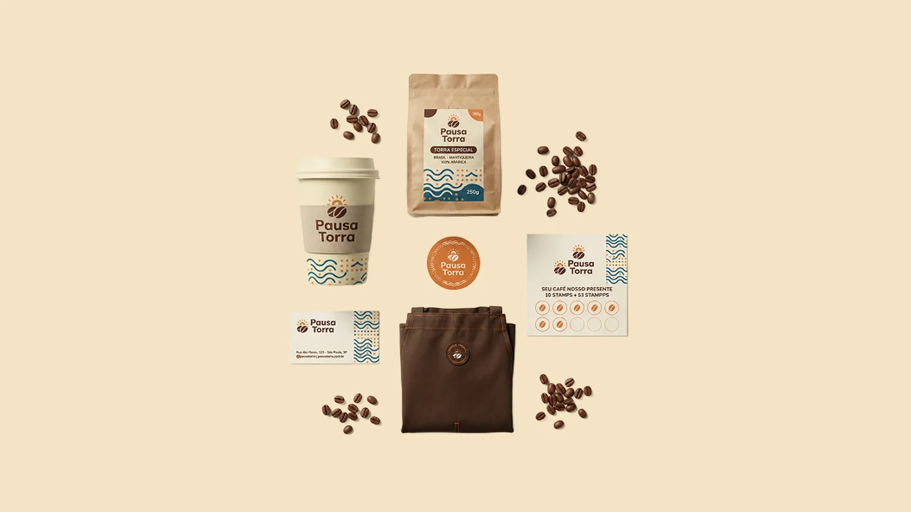

Pausa Torra
Uma identidade para uma cafeteria de especialidade que transforma o café do dia a dia em um pequeno ritual.

O desafio
Parecer o café da esquina, com a qualidade de uma torrefação.
A Pausa Torra é uma cafeteria fictícia de bairro que vende café especial para viagem e grãos para levar para casa. A marca precisava ser acolhedora e próxima, sem perder a sofisticação de quem entende de café.
Além disso, tinha que funcionar em superfícies muito diferentes: copo, embalagem kraft, papelaria, adesivo e uniforme.
Para quem
Pessoas que tomam café todos os dias e valorizam origem e qualidade, mas sem formalidade.
Objetivo
Uma marca fácil de reconhecer, que transmita calor e cuidado e se adapte a qualquer peça.
Conceito
“A pausa que aquece o dia.”
O símbolo une um grão de café a um sol nascendo. A ideia é tratar o primeiro café como o começo do dia: um momento curto, quente e só seu.
O processo
Do primeiro gole à marca pronta
- 01
Imersão
Pesquisa de cafeterias de especialidade e mapa visual do segmento.
- 02
Conceito
Três palavras guiaram as escolhas: acolhedor, artesanal e solar.
- 03
Exploração
Estudos de símbolo, tipografia, cor e padrão gráfico.
- 04
Aplicações
Teste da marca em copo, embalagem, cartões, adesivo e avental.
Sistema visual
Cores de café, sol e vapor
Marrom café
#472F22
Laranja torra
#CF6F2E
Creme
#F3E4C4
Azul petróleo
#1F5E6E
Tipografia
Sem serifa arredondada e pesada
Amigável de perto e legível de longe, do cardápio à fachada.
Padrão gráfico
Ondas e pontos
Ondas que lembram o vapor do café e pontos que lembram os grãos. Funciona sozinho, mesmo sem o logo.
Entregas
Uma marca que vai do copo ao avental
- Logo e variações
- Paleta e tipografia
- Padrão gráfico
- Embalagem de grãos
- Copo para viagem
- Cartão de visita
- Cartão fidelidade
- Adesivo
- Avental
Aprendizados
O que levo deste projeto
O padrão de ondas acabou virando o elemento mais forte da marca. Ele dá unidade a peças muito diferentes e permite reconhecer a Pausa Torra mesmo quando o logo não aparece.
Testar a marca cedo em objetos reais, como o copo e a embalagem, ajudou a ajustar tamanhos e contrastes antes de fechar o sistema.
Quer uma marca assim para o seu negócio?
Vamos conversar sobre o seu projeto.